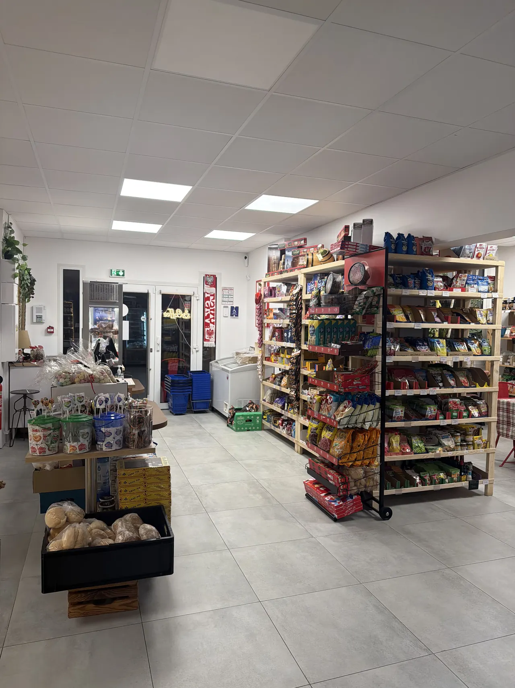

Kontakt · Contact
Venez nous rendre visite
Silesia vous accueille à Morangis, au 67 avenue Gabriel Péri. Une question sur un produit ? Appelez-nous, écrivez-nous par e-mail ou sur les réseaux sociaux.
Silesia – Épicerie polonaise
-
Adresse67 avenue Gabriel Péri
91420 Morangis
Essonne, France - Téléphone01 60 92 12 94
- E-mailsilesia91380@gmail.com
-
Horaires d'ouverture
Lundi Fermé Mardi 10 h – 19 h 30 Mercredi 10 h – 19 h 30 Jeudi 10 h – 19 h 30 Vendredi 10 h – 19 h 30 Samedi 10 h – 19 h 30 Dimanche Fermé Horaires susceptibles de varier les jours fériés : en cas de doute, appelez-nous avant de vous déplacer.
67 avenue Gabriel Péri
91420 Morangis
La carte est fournie par OpenStreetMap. En l'affichant, votre navigateur se connecte aux serveurs d'OpenStreetMap.

Réseaux sociaux
Suivez l'actualité de l'épicerie
Arrivages, nouveautés et idées de recettes : retrouvez-nous en ligne.
Accès
Une épicerie polonaise près de chez vous, en Essonne
Située avenue Gabriel Péri, à Morangis, Silesia est facilement accessible depuis les communes voisines du nord de l'Essonne. Que vous habitiez Morangis ou les alentours, venez découvrir nos produits polonais.
- Morangis
- Chilly-Mazarin
- Paray-Vieille-Poste
- Savigny-sur-Orge
- Athis-Mons
- Juvisy-sur-Orge
- Longjumeau
- Wissous
- Massy
- Épinay-sur-Orge